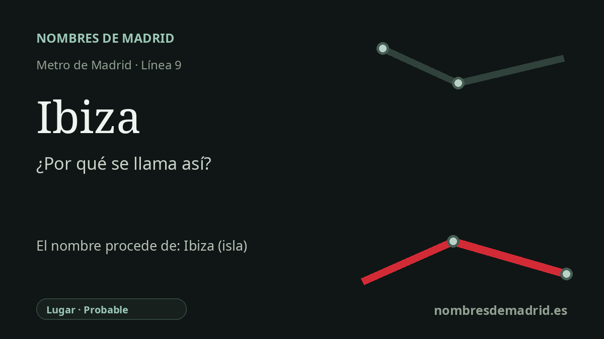

Publicado el · Investigación de Nombres de Madrid · Cómo verificamos cada origen · 9 fuentes consultadas
Respuesta rápida
La estación de Ibiza recibe su nombre de la calle de Ibiza, bajo la que se sitúa en Retiro. La calle forma parte de un pequeño patrón de nombres baleares en la zona, con Ibiza y Menorca aún visibles y Mallorca conservada solo de forma indirecta como antiguo nombre viario.
La historia del nombre
La estación de Ibiza toma su nombre de la calle de Ibiza, bajo la que se encuentran los andenes de la línea 9 en el distrito madrileño de Retiro. Es, por tanto, una transferencia del nombre de la vía pública inmediata, más que una dedicatoria directa del Metro a la isla: la estación heredó el topónimo urbano ya asentado.
Detrás del nombre de la calle está Ibiza, o Eivissa en catalán y en la forma oficial local de la isla, una de las Islas Baleares del Mediterráneo occidental. En Madrid, el nombre aparece dentro de un pequeño eco balear en la retícula de Retiro: la calle de Ibiza y la calle de Menorca siguen existiendo, y las referencias de callejero histórico indican que la actual calle del Doctor Castelo fue antes la calle de Mallorca.
La forma del barrio pertenece al gran crecimiento madrileño del siglo XIX. El Plan de Ensanche de Carlos María de Castro fue aprobado por Real Decreto el 19 de julio de 1860 y ordenó nuevos barrios fuera de la ciudad antigua, entre ellos Retiro, con una trama más regular. Ese contexto explica la cuadrícula, pero la documentación localizada no demuestra que el Plan Castro asignara por sí mismo el nombre de Ibiza; la fecha concreta de denominación de la calle debe tratarse aparte.
La estación de Metro llegó mucho después, cuando se construyó el enlace central de la línea 9 entre Avenida de América y Sainz de Baranda. La historia de transportes de la Comunidad de Madrid sitúa la apertura de ese tramo en febrero de 1986 con tres estaciones intermedias, mientras que referencias periodísticas dan el 24 de febrero y una página regional oficial da el 25 de febrero. En cualquier caso, el nombre de la estación parece haber estado fijado desde su apertura porque coincidía con la calle superior.
La interpretación más sólida es, por tanto, sencilla y toponímica: la estación de Ibiza se llama así por la calle de Ibiza, y esta por la isla balear. La idea de un conjunto balear cercano es razonable si se limita a Ibiza, Menorca y el antiguo nombre Mallorca; no conviene incluir Formentera o Cabrera en ese conjunto de Retiro salvo que aparezca una fuente archivística que lo pruebe.